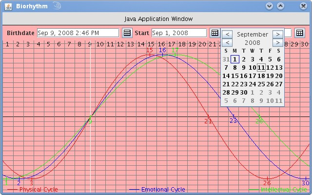

JCalendarButton is a simple java swing component that displays a popup calendar next to a date input field.
Here is a sample of what the buttons look like. To try this demo for yourself, click here. 
Developers: Instruction on adding JCalendarButton to your visual screen building tool such as netbeans. Also some sample code.
Project page at